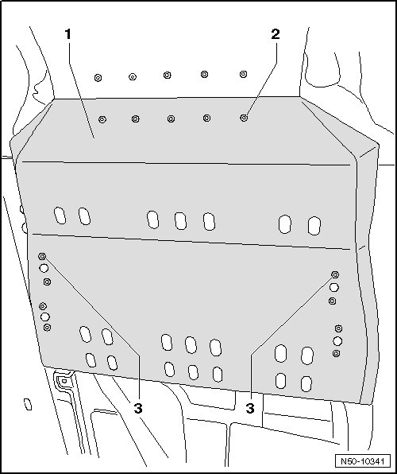

Underbody Impact Guard For Transmission
Underbody Impact Guard
Underbody Impact Guard for Transmission
Removing

- Remove the bolts - 2 - and - 3 - and remove underbody impact guard for transmission - 1 -.
Installation
- Bolt underbody impact guard for transmission - 1 - with bolts - 2 - and - 3 -.
- Tighten the bolts - 2 - and - 3 - on the transmission impact guard- 1 -, tightening specification 20 Nm.